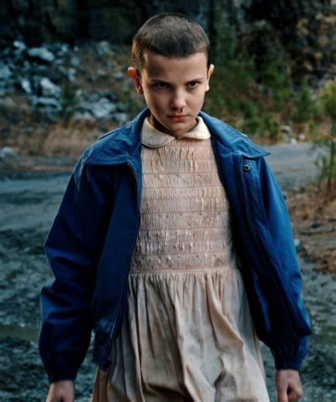
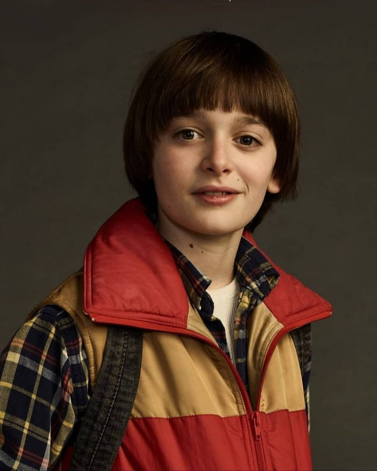
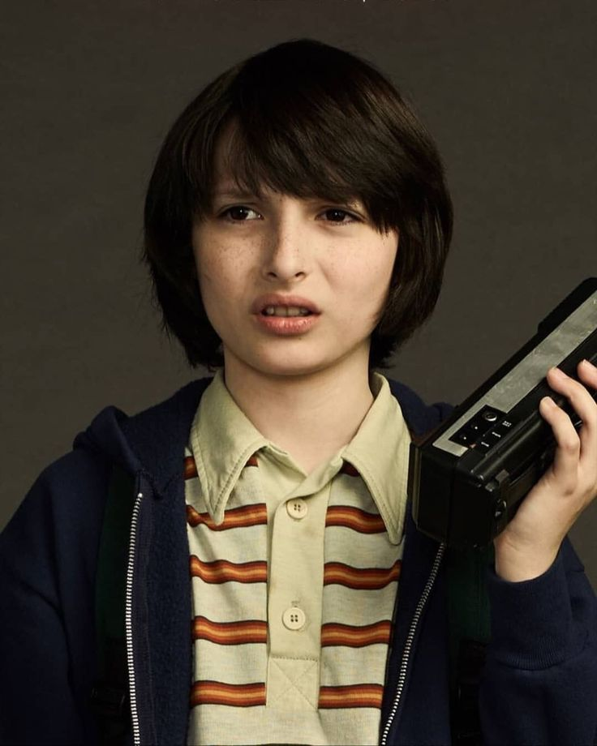
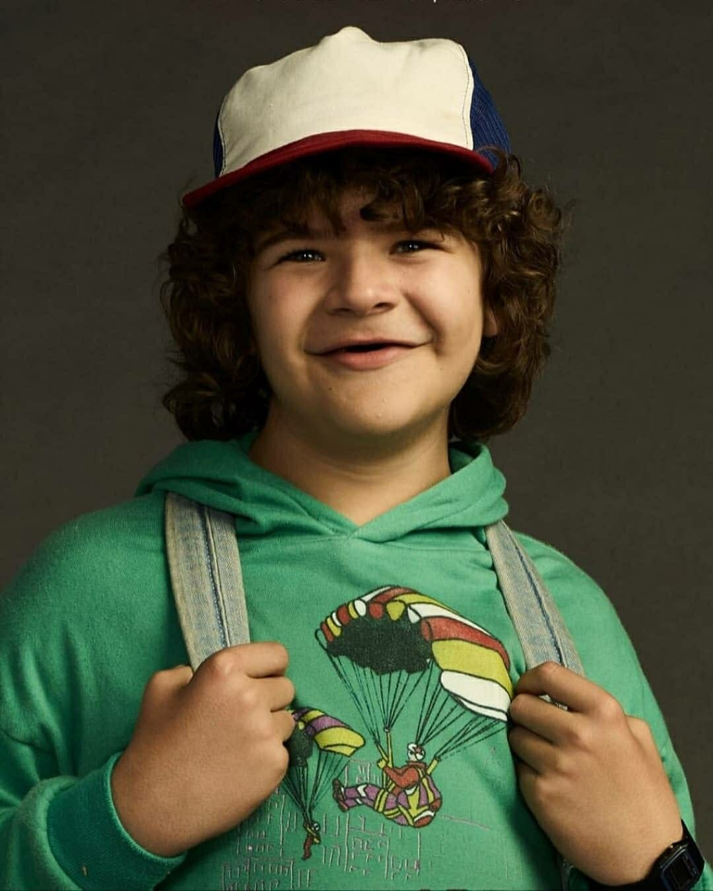
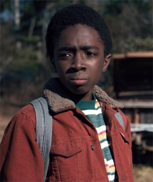
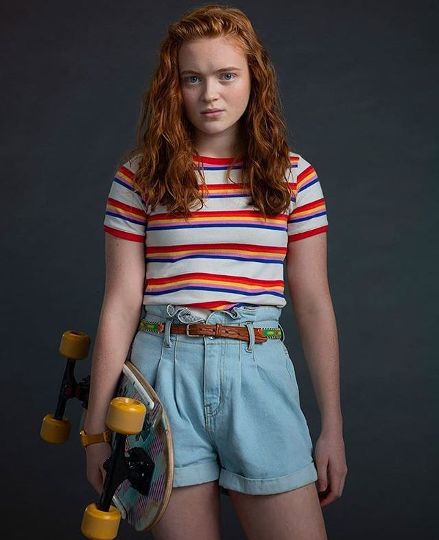
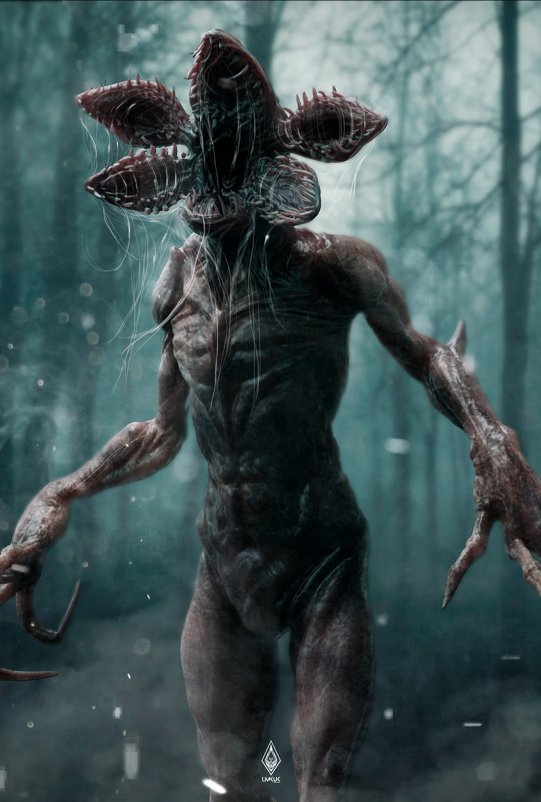
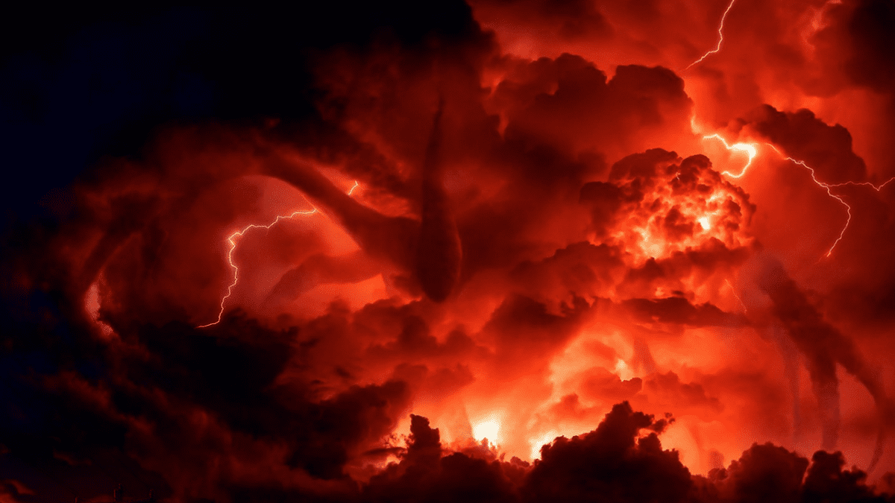
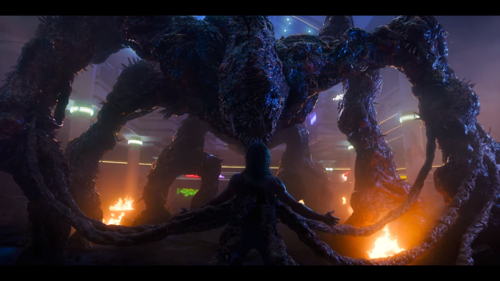
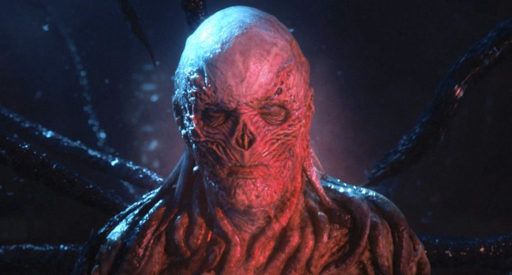

É uma personagem fictícia da série Stranger Things nascida em 1971 por aborto espontâneo e declarada morta, que era usada para experimentos desumanos pelo Dr. Martin Brenner no Laboratório de Hawkinks com fins de espionagem, já que em 1980 o mundo presenciava a guerra fria. Após escapar daquela prisão, Eleven é encontrada pelo grupo de amigos, Mike, Lucas e Dustin que estão em intensa investigação sobre desaparecimento do amigo Will Byers.
Após um tempo a garota de cabeça raspada revela seus superpoderes psíquicos, que a permite mover coisas com a telecinesia e comunicar-se com as pessoas através da mente com a telepatia. Ao decorrer dos episódios seu verdadeiro nome é revelado, Eleven na verdade se chama Jane Ives, e passa a se chamar Jane Hopper após o delegado Jim Hopper a adotar.
A personagem tem um amadurecimento notável durante as temporadas, aceita desafios e faria de tudo para salvar sua nova família e seus novos amigos.
Descubra o quão poderosos são os superpoderes da nossa querida El(também conhecida como On) assistindo a série, disponível na Netflix.

Will Byers é filho de Joyce Byers e irmão de Jonathan Byers, por quem tem muita consideração, já que seus pais são divorciados.
O maior fã do jogo de RPG Dungeons & Drangos (D&D), que joga todas as tardes na companhia de Mike Wheeler, seu melhor amigo e Dustin Handerson e Lucas Sinclair que compõem o grupo dos nerds na esola de Hawkins.
Um dia voltando para a casa de bicicleta após uma partida de D&D na casa de seu melhor amigo, Will decide voltar pelo caminho que passa por uma floresta que é propriedade do Laboratório de Hawkins.
Infelizmente o garoto é surpreendido por um Demogorgon, uma criatura asquerosa que o leva para o Mundo Invertido, que até então nínguem sabia de sua existência.

Mike, como é chamado pelos seu amigos é um garoto de 12 anos muito inteligente que participa do Clube Audiovisual da escola de Hawkins junto com Will, Dustin e Lucas, sempre ganhando as feiras de ciências anuais.
Como um bom fã de D&D assim como Will, Mike disponibiliza seu porão para as partidas e assim, se divertem até o anoitecer, ou até sua irmã mais velha Nancy suportar os gritos de emoções quando vencem o jogo. Mike conhece a Eleven e criam uma amizade incrível e fiel, mas até quando isso será somente amizade?

Dustin é o mais engraçado e inocente do grupo, tem uma quedinha por Nancy, irmã de seu amigo Mike e adora experimentos e equipamentos tecnológicos. Não é atoa que sua parceira que aparece na 3º temporada é super inteligente e é super ligada na tecnologia e computadores.
Ele com certeza seria o tipo de pessoa que não poderiamos confiar para cuidar de algo importante, mas ao decorrer da série ele amadurece e fica corajoso, salvando o mundo inteiro junto de seus amigos.
Com ele as risadas são garantidas, além da paixão, Henderson é apaixonado por sua querida e brilhante Suzie.

Lucas Sinclair é o receoso do grupo, é muito difícil conquistar sua confiança, mas sempre ajuda seus amigos quando é preciso e é fiel até o fim. Lucas não é muito carinhoso com ninguém, mas quando a Max se torna integrante da turma ela consegue deixar o garoto completamente apaixonado.
Ele e sua irmã Erica Sinclair apesar de se odiarem formam uma boa dupla, ambos são espertos e prestativos, será o suficiente para derrotarem o demogorgon?

Maxine ou Max, chega ao grupo na segunda temporada de Stranger Things, a rebelde skatista que odeia seu meio irmão super popular da Hawkins Middle School, não é uma pessoa muito amigável de início, mas enfrentaria a morte por aqueles que ama.
Ela e o irmão Billy vivem brigando, sua vida está de pernas para o ar, por isso ela está sempre no fliperama e acaba atingindo a maior pontuação de Palace Arcade, jogo que os garotos nerds sempre venciam ficando em destaque. É claro que isso chamou a atenção de Mike, Lucas, Dustin e Will, afinal que era a misteriosa "MADMAX" em primeiro lugar no placar?

O monstro mais temido de Hawkins aparece logo na primeira temporada da série, veio do mundo invertido e é atraído pelo sangue, adora ambientes frios e não tem rosto, por isso é orientado pela audição.
Durante alguns meses esta criatura aterrorizou a pequena cidade formando um grande número de vítimas cujo eram levadas para o Upside Down e geralmente nunca eram encontradas, já que se tratava de outra dimensão. Uma de suas vítimas foi o pequeno Will que misteriosamente desapareceu na floresta em uma noite fria. Com a ajuda de Eleven, quem abriu o portal entre as dimensões, o delegado Jim Hopper, a mãe do garoto desaparecido e seus amigos começam a descobrir a verdade sobre esse lado estranho de Hawkins.
O monstro recebeu o nome de Demogorgon que é um dos personagens do jogo de RPG Dangeouns & Dragons, não é tão fácil derrotá-lo, ele possui habilidades únicas como: viagem interdimencional, força, telecinese, detecção por sangue, durabilidade e cura regenerativa. Você teria coragem de enfrenatar esta criatura horripilante?

Como o próprio nome diz, o Devorador de Mentes ou Monstro das Sombras, tem uma habilidade especial de controlar a mente de qualquer pessoa, ele era o responsável pelo Mundo Invertido e pelos Demogorgons.
Possui uma aparencia assustadora, como uma sombra gigante em meio a uma tempestade vermelha, não possui rosto e possui membros semelhantes a tentáculos. O Will soube desenhar esta criatura muito bem na 2º temporada.
Ao possuir um indivíduo, o Devorador de Mentes faz contato direto com a vítima e controla suas ações e falas. O monstro detesta calor, por isso mantem a pessoa em temperatura fria e solta rugidos ao aproximar-se de qualquer ambiente quente. Depois de usar a vítima a seu favor ele geralmente a mata.

O Monstro Aranha é similar ao Monstro do Hospital, que é formado por restos mortais dissolvidos das pessoas e criaturas que o Monstro das Sombras dominou, tornando-se uma gosma gigante e assassina.

O último e mais novo monstro de Stranger Things apareceu no volume 1 da 4º temporada que foi recém lançada e já deu o que falar, teorias sobre o que acontecerá no volume 2 já está sendo postada pelos fãs nas redes sociais.
Vecna é o nome do novo líder do Upside Down, com a aparência perturbadora como se não tivesse pele ou estivesse se decompondo Vecna começa os ataques em Hawkins, somente a vítima pode enxergá-lo, enquanto flutua e tem os ossos quebrados e os olhos estourados.